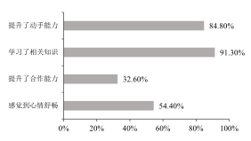

第 1 题 #
1.A. becauseB. unlessC. whereasD. until
点击查看答案
此题暂无可用答案。
考研英语 · questions · 2024
题号和章节目录由结构化数据生成。选项按卷面字母顺序显示；原标记保留在 JSON 中。
Read the following text. Choose the best word(s) for each numbered blank and mark A, B, C or D on the ANSWER SHEET. (10 points)
Your social life is defined as “the activities you do with other people, for pleasure, when you are not working.” It’s important to have a social life, but what’s right for one person won’t be right for another. Some of us feel energised by spending lots of time with others, 1 some of us may feel drained, even if it’s doing something we enjoy.
This is why finding a 2 in your social life is key. Spending too much time on your own, not 3 others, can make you feel lonely and 4 . Loneliness is known to impact on your mental health and 5 a low mood. Anyone can feel lonely at any time. This might be especially true if, 6 , you are working from home and you are 7 on the usual social conversations that happen in an office. Other life changes can 8 periods of loneliness too, such as retirement, changing jobs or becoming a parent.
It’s important to recognise these feelings of loneliness. There are ways to 9 a social life, but it can feel overwhelming 10 . It’s a great idea to start by thinking about hobbies you enjoy. You can then find groups and activities related to those where you will be able to meet 11 people. There are groups aimed at new parents, at those who want to 12 a new sport for the first time, or networking events for those in the same profession to meet up and 13 ideas.
On the other hand, it’s 14 possible to have too much of a social life. If you feel like you’re always doing something and there is never any 15 in your calendar for downtime, you could suffer social burnout or social 16 . We all have our own social limit and it’s important to recognise when you’re feeling like it’s all too much. Low mood, low energy, irritability and trouble sleeping could all be 17 of poor social health. Make sure you 18 some time in your diary when you’re 19 for socialising and use this time to relax, 20 and recover.
此题暂无可用答案。
此题暂无可用答案。
此题暂无可用答案。
此题暂无可用答案。
此题暂无可用答案。
此题暂无可用答案。
此题暂无可用答案。
此题暂无可用答案。
此题暂无可用答案。
此题暂无可用答案。
此题暂无可用答案。
此题暂无可用答案。
此题暂无可用答案。
此题暂无可用答案。
此题暂无可用答案。
此题暂无可用答案。
此题暂无可用答案。
此题暂无可用答案。
此题暂无可用答案。
此题暂无可用答案。
Read the following four texts. Answer the questions below each text by choosing A, B, C or D. Mark your answers on the ANSWER SHEET. (40 points)
In her new book Cogs and Monsters: What Economics Is, and What It Should Be, Diane Coyle, an economist at Cambridge University, argues that the digital economy requires new ways of thinking about progress. “Whatever we mean by the economy growing, by things getting better, the gains will have to be more evenly shared than in the recent past,” she writes. “An economy of tech millionaires or billionaires and gig workers, with middle-income jobs undercut by automation, will not be politically sustainable.”
Improving living standards and increasing prosperity for more people will require greater use of digital technologies to boost productivity in various sectors, including health care and construction, says Coyle. But people can’t be expected to embrace the changes if they’re not seeing the benefits — if they’re just seeing good jobs being destroyed.
In a recent interview, Coyle said she fears that tech’s inequality problem could be a roadblock to deploying AI. “We’re talking about disruption,” she says. “These are transformative technologies that change the ways we spend our time every day, that change business models that succeed.” To make such “tremendous changes,” she adds, you need social buy-in.
Instead, says Coyle, resentment is simmering among many as the benefits are perceived to go to elites in a handful of prosperous cities.
According to the Brookings Institution, a short list of eight American cities that included San Francisco, San Jose, Boston, and Seattle had roughly 38% of all tech jobs by 2019. New AI technologies are particularly concentrated: Brookings’s Mark Muro and Sifan Liu estimate that just 15 cities account for two-thirds of the AI assets and capabilities in the United States.
The dominance of a few cities in the invention and commercialization of AI means that geographical disparities in wealth will continue to soar. Not only will this foster political and social unrest, but it could, as Coyle suggests, hold back the sorts of AI technologies needed for regional economies to grow.
on defining the AI agenda. That will likely take increased federal funding for research independent of the tech giants.
A more immediate response is to broaden our digital imaginations to conceive of AI technologies that don’t simply replace jobs but expand opportunities in the sectors that different parts of the country care most about, like health care, education, and manufacturing.
21. Coyle argues in her new book that economic growth should ______
此题暂无可用答案。
22. According to Paragraph 2, digital technologies should be used to ______
此题暂无可用答案。
23. What does Coyle fear about transformative technologies?
此题暂无可用答案。
24. Several American cities are mentioned to show ______
此题暂无可用答案。
25. With regard to Coyle’s concern, the author suggests ______
此题暂无可用答案。
The UK is facing a future construction crisis because of a failure to plant trees to produce wood, Confor has warned. The forestry and wood trade body has called for urgent action to reduce the country’s reliance on timber imports and provide a stable supply of wood for future generations. Currently only 20 percent of the UK’s wood requirement is home-grown while it remains the second-largest net importer of timber in the world.
Coming at a time of fresh incentives from the UK government for landowners to grow more trees, the trade body says these don’t go far enough and fail to promote the benefits of planting them to boost timber supplies. “Not only are we facing a carbon crisis now, but we will also be facing a future construction crisis because of a failure to plant trees to produce wood,” said Stuart Goodall, chief executive of Confor. “For decades we have not taken responsibility for investing in our domestic wood supply, leaving us exposed to fluctuating prices and fighting for future supplies of wood as global demand rises and our own supplies fall.”
The UK has ideal conditions for growing wood to build low-carbon homes and is a global leader in certifying that its forests are sustainably managed, Confor says. While around three quarters of Scottish homes are built from Scottish timber, the use of home-grown wood in England is only around 25 percent. The causes of the UK’s current position are complex and range from outdated perceptions of productive forestry to the decimation of trees by grey squirrels. It also encompasses significant hesitation on behalf of farmers and other landowners to invest in long-term planting projects.
While productive tree planting can deliver real financial benefits to rural economies and contribute to the UK’s net-zero strategy, the focus of government support continues to be on food production and the rewilding and planting of native woodland solely for biodiversity. Goodall added: “While food production and biodiversity health are clearly of critical importance, we need our land to also provide secure supplies of wood for construction, manufacturing and contribute to net-zero.”
“While the UK government has stated its ambition for more tree planting, there has been little action on the ground. Confor is now calling for much greater impetus behind those aspirations to ensure we have enough wood to meet increasing demand.”
26. It can be learned from Paragraph 1 that the UK needs to ______
此题暂无可用答案。
27. According to Confor, the UK government’s fresh incentives ______
此题暂无可用答案。
28. The UK’s exposure to fluctuating wood prices is a result of ______
此题暂无可用答案。
29. Which of the following causes the shortage of wood supply in the UK?
此题暂无可用答案。
30. What does Goodall think the UK government should do?
此题暂无可用答案。
One of the biggest challenges in keeping unsafe aging drivers off the road is convincing them that it’s time to turn over the keys. “It’s a complete life-changer” when someone stops — or is forced to stop — driving, said former risk manager Anne M. Menke.
“The American Medical Association advises physicians that in situations where clear evidence of substantial driving impairment implies a strong threat to patient and public safety, and where the physician’s advice to discontinue driving privileges is ignored, it is desirable and ethical to notify the Department of Motor Vehicles,” Menke wrote. “Some states require physicians to report, others allow but do not mandate reports, while a few consider a report a breach of confidentiality. There could be liability and penalties if a physician does not act in accordance with state laws on reporting and confidentiality,” she counseled.
piecemeal by different professions with different focuses, including gerontologists, highway administration officials, automotive engineers and others, said gerontologist Elizabeth Dugan. “There’s not a National Institute of Older Driver Studies,” she said. “We need better evidence on what makes drivers unsafe” and what can help, said Dugan.
One thing that does seem to work is requiring drivers to report in person for license renewal. Mandatory in-person renewal was associated with a 31 percent reduction in fatal crashes involving drivers 85 or older, according to one study. Passing vision tests also produced a similar decline in fatal crashes for those drivers, although there appeared to be no benefit from combining the two.
Many older drivers don’t see eye doctors or can’t afford to. Primary care providers have their hands full and may not be able to follow through with patients who have trouble driving because they can’t turn their heads or remember where they are going — or have gotten shorter and haven’t changed their seat settings sufficiently to reach car pedals easily.
As long as there are other cars on the roads, self-driving cars won’t solve the problems of crashes, said Dugan. Avoiding dangers posed by all those human drivers would require too many algorithms, she said. But we need to do more to improve safety, said Dugan. “If we’re going to have 100-year lives, we need cars that a 90-year-old can drive comfortably.”
31. According to Paragraph 1, keeping unsafe aging drivers off the road ______
此题暂无可用答案。
32. The American Medical Association’s advice ______
此题暂无可用答案。
33. According to Dugan, efforts to keep older drivers safe ______
此题暂无可用答案。
34. Some older drivers have trouble driving because they tend to ______
此题暂无可用答案。
35. Dugan thinks that the solution to the problems of crashes may lie in ______
此题暂无可用答案。
If you look at the apps on your phone, chances are you have at least one related to your health — and probably several. Whether it is a mental health app, a fitness tracker, a connected health device or something else, many of us are taking advantage of this technology to keep better track of our health in some shape or form. Recent research from the Organization for the Review of Care and Health Applications found that 350,000 health apps were available on the market, 90,000 of which launched in 2020 alone.
While these apps have a great deal to offer, it is not always clear how the personal information we input is collected, safeguarded and shared online. Existing health privacy law, such as the Health Insurance Portability and Accountability Act, is primarily focused on the way hospitals, doctors’ offices, clinics and insurance companies store health records online. The health information these apps and health data tracking wearables are collecting typically do not receive the same legal protections.
Without additional protections in place, companies may share (and potentially monetize) personal health information in a way consumers may not have authorized or anticipated. In 2021, Flo Health faced a Federal Trade Commission (FTC) investigation. The FTC alleged in a complaint that “despite express privacy claims, the company took control of users’ sensitive fertility data and shared it with third parties.” Flo Health and the FTC settled the matter with a Consent Order requiring the company to get app users’ express affirmative consent before sharing their health information as well as to instruct the third parties to delete the data they had obtained.
Section 5 of the FTC Act empowers the FTC to initiate enforcement action against unfair or deceptive acts, meaning the FTC can only act after the fact if a company’s privacy practices are misleading or cause unjustified consumer harm. While the FTC is doing what it can to ensure apps are keeping their promises to consumers around the handling of their sensitive health information, the rate at which these health apps are hitting the market demonstrates just how immense of a challenge this is.
As to the prospects for federal legislation, commentators suggest that comprehensive federal privacy legislation seems unlikely in the short term. States have begun implementing their own solutions to shore up protections for consumer-generated health data. California has been at the forefront of state privacy efforts with the California Consumer Privacy Act of 2018. Virginia, Colorado and Utah have also recently passed state consumer data privacy legislation.
36. The research findings are cited in Paragraph 1 to show ______
此题暂无可用答案。
37. What does the author imply about existing health privacy law?
此题暂无可用答案。
38. Before sharing its users’ health information, Flo Health is required to ______
此题暂无可用答案。
39. What challenge is the FTC currently faced with?
此题暂无可用答案。
40. It can be learned from the last paragraph that health data protection ______
此题暂无可用答案。
Read the following text and match each of the numbered items in the left column to its corresponding information in the right column. There are two extra choices in the right column. Mark your answers on the ANSWER SHEET. (10 points)
How Colleges Weigh Applicants’ Extracurricular Activities
High school students eager to stand out in the college application process often participate in a litany of extracurricular activities hoping to bolster their chances of admission to a selective undergraduate institution.
However, college admissions experts say that the quality of a college hopeful’s extracurricular activities matters more than the number of activities he or she participates in.
Sue Rexford, the director of college guidance at the Charles E. Smith Jewish Day School, says it is not necessary for a student filling out the Common Application to list 10 activities in the application.
“No college will expect that a student has a huge laundry list of extracurriculars that they have been passionately involved in each for an extended period of time,” Rexford wrote in an email.
Experts say it is tougher to distinguish oneself in a school-affiliated extracurricular activity that is common among high school students than it is to stand out while doing an uncommon activity.
“The competition to stand out and make an impact is going to be much stiffer, and so if they’re going to do a popular activity, I’d say, be the best at it,” says Sara Harberson, a college admissions consultant.
High school students who have an impressive personal project they are working on independently often impress colleges, experts say.
“For example, a student with an interest in entrepreneurship could demonstrate skill and potential by starting a profitable small business,” Olivia Valdes, the founder of Zen Admissions consulting firm, wrote in an email.
Joseph Adegboyega-Edun, a Maryland high school guidance counselor, says unconventional extracurricular activities can help students impress college admissions offices, assuming they demonstrated serious commitment. “Again, since one of the big questions high school seniors must consider is ‘What makes you unique?,’ having an uncommon extracurricular activity vs. a conventional one is an advantage,” he wrote in an email.
Experts say demonstrating talent in at least one extracurricular activity can help in the college admissions process, especially at top-tier undergraduate institutions.
“Distinguishing yourself in one focused type of extracurricular activity can be a positive in the admissions process, especially for highly selective institutions, where having top grades and test scores is not enough,” Katie Kelley, admissions counselor at IvyWise admissions consultancy, wrote in an email. “Students need to have that quality or hook that will appeal to admissions officers and allow them to visualize how the student might come and enrich their campus community.”
Extracurricular activities related to the college major declared on a college application are beneficial, experts suggest. “If you already know your major, having an extracurricular that fits into that major can be a big plus,” says Mayghin Levine, the manager of educational opportunities with The Cabbage Patch Settlement House, a Louisville, Kentucky, nonprofit community center.
High school students who have had a strong positive influence on their community through an extracurricular activity may impress a college and win a scholarship, says Erica Gwyn, a former math and science magnet program assistant at a public high school who is now executive director of the Kaleidoscope Careers Academy in Atlanta, a nonprofit organization.
41. Sue Rexford
选项见上方原卷表格。
此题暂无可用答案。
42. Sara Harberson
选项见上方原卷表格。
此题暂无可用答案。
43. Katie Kelley
选项见上方原卷表格。
此题暂无可用答案。
44. Mayghin Levine
选项见上方原卷表格。
此题暂无可用答案。
45. Erica Gwyn
选项见上方原卷表格。
此题暂无可用答案。
46. Directions:
Translate the following text into Chinese. Write your translation on the ANSWER SHEET. (15 points)
With the smell of coffee and fresh bread floating in the air, stalls bursting with colourful vegetables and tempting cheeses, and the buzz of friendly chats, farmers’ markets are a feast for the senses. They also provide an opportunity to talk to the people responsible for growing or raising your food, support your local economy and pick up fresh seasonal produce — all at the same time.
Farmers’ markets are usually weekly or monthly events, most often with outdoor stalls, which allow farmers or producers to sell their food directly to customers. The size or regularity of markets can vary from season to season, depending on the area’s agricultural calendar, and you’re likely to find different produce on sale at different times of the year. By cutting out the middleman, the farmers secure more profit for their produce. Shoppers also benefit from seeing exactly where — and to who — their money is going.
此题暂无可用答案。
47. Directions:
Suppose you and Jack are going to do a survey on the protection of old houses in an ancient town. Write him an email to
1) put forward your plan, and
2) ask for his opinion.
Write your answer in about 100 words on the ANSWER SHEET.
Do not use your own name in your email; use “Li Ming” instead. (10 points)
此题暂无可用答案。
48. Directions:
Write an essay based on the chart below. In your writing, you should
1) describe and interpret the chart, and
2) give your comments.
Write your answer in about 150 words on the ANSWER SHEET. (15 points)

此题暂无可用答案。